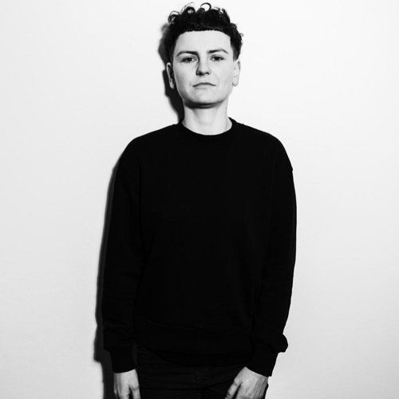
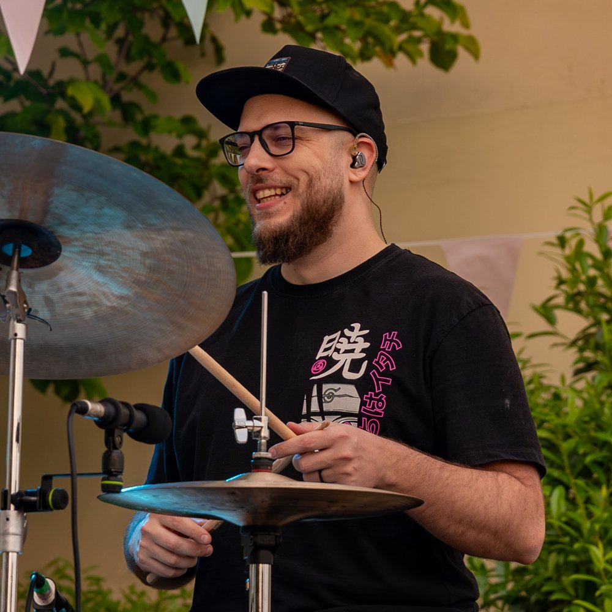
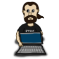
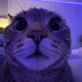
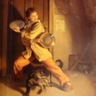

Na pohovoru proti mně sedělo šest lidí. Tomáš Novák o tranzitu z hudby do IT
-

Adéla Pavlun - 2.10.2026

Projít životopis čtyřiatřicetiletého Tomáše Nováka zabere jen pár vteřin. A hned máte jasno. Tomáš je bubeník hrající v několika kapelách (Strýc, Bardolino, Loes & Celtic link…), učitel bicích a současně také juniorní frontend developer. Ve třiceti se ohlédl a neviděl za sebou nic než hudbu, a tak se rozhodl naučit se něco nového. „Nejdřív jsem zkazil dvěma klukům účesy a pak jsem se rozhodl naučit se programovat. Když jsem dostal práci, nemohl jsem tomu pár hodin uvěřit,“ říká Tomáš.
Bicí nástroje jsou tvým druhým jazykem, který učíš druhé. Jak bys porovnal učení se bubnování a programování?
Snažil jsem se v metodice hledat paralely. Obojí je o tom zažít si to. Člověk ti to může vysvětlit, ukázat, ale je potřeba to vyzkoušet a pochopit. Poté, co jsem se dostal do práce, jsem zjistil, že věci, o kterých jsem si myslel, že jsou jasné a že je zvládám, až tak jasné nebyly. Přehlížel jsem je a dělal zbytečné chyby. Odsezené hodiny a praxe jsou strašně důležité. Člověk tomu musí věnovat hodně času.
A v čem se to naopak liší?
Hlavně v těle. Bicí jsou mechanická záležitost, ale hraješ i hlavou – v kapele nehraješ jen za sebe, máš pořád nějakou proměnnou. Někdo může udělat chybu a ty to musíš pochytat, přemýšlíš nad náladou skladby, co si můžeš dovolit, jaká bude další písnička. Hlava jede na sto procent, ale zapojené je celé tělo. Když všechny čtyři končetiny, hlava a všechno secvakne dohromady, občas nastane flow, kdy koncentrace vyletí o desítky procent nahoru. U programování tam ten fyzický přesah chybí.
To zní krásně. Proč ses rozhodl od hudby přejít do IT?
Bude to znít jako klišé, ale když jsem se ohlédl ve třiceti za sebe, zjistil jsem, že jsem dokončil konzervatoř, nastoupil jako učitel, a nikdy nevyzkoušel nic jiného. Měl jsem plný úvazek na základní umělecké škole, do toho jsem hrál koncerty, a to bylo jediné, co jsem uměl a dokázal. Do toho jsme se zasnoubili, plánovali svatbu a budoucnost, a k tomu finanční situace ve školství moc nenahrávala. Seděl jsem na stejné židli už moc dlouho a uvědomoval si, že ta rutina je stále těžší a otravnější. Hledal jsem východisko. Hudbu učím už jen občas soukromě, koncertování mi zůstalo. Vůbec toho nelituji. Učitelství a hudba jsou spíš poslání než něco, co přinese stabilitu a pevný režim. Je to těžké řemeslo.
Měl jsi k počítačům blízko, nebo jak tě napadlo právě IT?
Spíš jen z uživatelské stránky – odseděl jsem u počítače hodně času s hrami. Nejdřív jsem vyzkoušel naučit se stříhat vlasy, ale potom, co jsem zkazil účesy dvěma klukům, jsem uznal, že to nebude moje cesta. Pak jsem se bavil s kamarádem, který tady v Pardubicích vedl projekty v IT firmě. Inspiroval mě k tomu, abych to zkusil, řekl, že tomu můžu dát pár měsíců a uvidím. Na tento popud jsem si koupil MacBook a začal se učit.
Jak jsi to zvládal při práci na plný úvazek?
Postupně. Při plném úvazku na ZUŠ jsem se učil tři až čtyři hodiny denně, o prázdninách třeba šest. Druhý rok jsem si snížil úvazek tak, aby se mi zaplatil nájem. Učil jsem maximálně dva dny, zbytek peněz jsem si musel vydělat hraním. Měl jsem tak víc času na učení. Ten rok jsem už plánoval skončit úplně, takže jsem před sebou měl deadline: na konci června rozdám vysvědčení, do konce července mám dovolenou, do té doby si chci najít práci. Nechtěl jsem se té vize vzdát.

Hledání práce a posílání CV pro mě bylo úplně nové.
Jak jsi věděl, co se učit?
Po prozkoumání trhu jsem se držel rozhodnutí jít směrem React, takže jsem vyhledával kurzy zaměřené na tuto technologii. Ze začátku bylo těžké se v nabídce vyznat – firem a reklam na rychlokvašené kurzy se slibovanými 150 tisíci po nástupu bylo na českém Facebooku spousta, a lidi, které jsem znal z oboru, o kurzech tolik nevěděli. Pomohl mi kamarád a pak junior.guru. Nejdřív se mi nechtělo platit za členství, ale když to na mě vyskočilo potřetí, zkusil jsem to a platím dodnes. Sleduju hlavně diskuse v kariérní skupině, situace z pohovorů a JavaScript novinky, a sám tam sdílím inzeráty, když u nás ve firmě sháníme juniory nebo mediory.
Jaké to bylo pro tebe hledat první práci?
Náročné. Šel jsem ze školy rovnou na místo, kde jsem nemusel dělat pohovor, takže shánění práce a psaní CV pro mě bylo úplně nové. První příležitost nedopadla – menší firma neměla kapacitu na zaučování zelenáče, a trochu mi to podtrhlo nohy. Pomohla mi podpora manželky a junior.guru. Díky konzultacím jsem se dostal k mentoringu a mohl rozebrat chyby z dalšího pohovoru, kde mi nevyšlo technické kolo.
Podařilo se nakonec najít tu práci do termínu, který sis stanovil?
Nakonec ano, a byla to náhoda přes bicí. 31. července jsem končil na ZUŠ, 1. srpna jsem nastupoval do Quadientu, kde jsem dodnes. Před lety jsem si šel půjčit činely od kamaráda, sedli jsme si na zahrádku a seznámil jsem se s člověkem z Quadientu. Řekl jsem mu, že se učím a domluvili jsme se, že se někdy potkáme. Tehdy jsem byl úplně na začátku. Pak jsem si na něj vzpomněl, když jsem hledal práci, a napsal mu, zda náhodou nehledají někoho s Reactem. Šel jsem na doporučení a dnes slavím v Quadientu dva roky.
Jaký byl pohovor?
Oslovila mě Klára z talent acquisition, ke které se dostalo mé CV, a přes ni jsem prošel do dalšího kola, kde proti mně sedělo šest lidí. Bylo to docela děsivé. Musel jsem z hlavy řešit problémy a hledat chyby v kódu. Končili jsme tím, že jsme se bavili o mých koníčcích. Důležitou otázkou bylo, jestli hraju hry, tedy jestli zapadnu do týmu. V tu chvíli jsem zvedl hrnek se znakem Hordy. Mám za sebou pár let s WoW, hry mi fakt cizí nejsou.
Jaký to byl pocit, když jsi dostal nabídku, a jak dlouho ti trvalo se v novém týmu usadit?
Trvalo mi pár hodin, než jsem tomu uvěřil. Vůbec jsem neváhal. Když mi volala Klára s nabídkou, řekl jsem rovnou ano, ona na mě, ať si to v klidu promyslím. Bylo to hezké zadostiučinění, ale i strašák, jestli vím dost na to, abych tam vůbec byl k něčemu… impostor syndrom se párkrát objevil i po nástupu. Naštěstí vedoucí týmu je super a vysvětlil mi, že se nemám bát ozvat, když takové myšlenky přijdou. Narazil jsem na skvělý tým, nikdo tu nečeká na chybu, máme společné cíle. Tím, jak je naše aplikace rozsáhlá a složitá, se firma snaží, aby lidi neutekli. I seniornějšímu člověku by tady trvalo zhruba rok, než bude samostatný.
Na čem tam pracuješ?
Quadient má historii dlouhou přes sto let, zabývá se komunikací mezi zákazníkem a firmou. Já dělám na softwaru pro vytváření komunikace se zákazníkem z pohledu bank, pojišťoven: generování smluv, e-mailové šablony a podobně. Souběžně s vývojem děláme přepis do Reactu.
Přijde ti, že sis vybral dobře novou profesi?
Ano, ukázalo mi to úplně jiný životní styl a rytmus. Nejdřív jsem byl student, pak učitel, nic jiného. Objevil jsem věci, které jsem znal jen z doslechu, třeba dovolenou, kterou si můžu vzít kdykoliv. Ze ZUŠky jsem přijížděl domů někdy až po sedmé, teď mám volné víkendy. V pátek se práce zavře a do pondělí zůstane zavřená. Většinu týdne navíc můžu pracovat z domu. Takhle mi to vyhovuje, kdybych byl doma pořád, zlenivěl bych.
Vnímáš i nějaké nevýhody této práce?
Myšlenky, jestli AI nenahradí člověka, má dneska v IT asi každý. Neotáčím se, nehledám bokem částečný úvazek, beru to jako krok dopředu za osobním rozvojem. V kontextu toho, co děláme my, člověk nebude nahraditelný ještě nějakou dobu. Kontrola výstupu a znalost produktu bude zásadní. Kontextová okna nejsou tak velká, aby pobrala vše, a moje znalosti nesou přidanou hodnotu. Vidím to i dnes, když používáme Claude. Dokážu s ním udělat víc práce, ale bez správného popisu problému se tam člověk nedostane. Trochu strach mám, ale když by to přišlo, hroutit se nebudu – pořád se můžu vrátit k bubnování a učení, něco bych vymyslel.
A jakým směrem se chceš ideálně ubírat?
Rád bych využil měkké dovednosti, které jsem nabral při komunikaci s rodiči a dětmi. Měli jsme hodně mezinárodních projektů, jezdil jsem se školou do zahraničí. Čistokrevný ajťák může mít ke komunikaci s lidmi odpor, nemusí mu to sedět osobnostně. Kdyby přišla možnost agilního tréninku, chtěl bych směřovat k manažerské roli. U nás ve firmě míváme pravidelně agilní kruhy, třeba se vydám touto cestou.
Situace pro juniory se v posledních pár letech trochu zkomplikovala. Jak je to u vás ve firmě?
Jsme otevření spolupráci s komunitami jako junior.guru, máme i program s univerzitami v okolí. Poslední zimu jsme měli na starost dva stážisty, kteří si vyzkoušeli práci u nás na projektu. Dostanou se k nám na devět měsíců, vyzkouší si testování, vývoj a projdou celým kolečkem. Při oboustranné spokojenosti zůstali stážisti i přes léto a někteří u nás zůstali na plný úvazek. Nabíráme i juniorní lidi, ale zřejmě jinak než přes klasické pracovní portály.
Co bys poradil lidem, kteří zvažují tranzit do IT?
Nejdřív bych si to dvakrát, třikrát rozmyslel. Zkusil bych si napsat kód a dát si osmihodinovou šichtu u počítače, jestli to zvládnu po mentální stránce. Kamarád ze ZUŠ odcházel ve stejnou dobu jako já, tak jsem do něj chvíli rýpal, jestli taky nechce programovat. Zvládl to dvě odpoledne a pak řekl, že by nevydržel sedět u počítače takto dlouho každý den. Nakonec odešel do armády.
Nešel bych do toho jen kvůli penězům. Rozhodně to není tak, že by člověk nastoupil a hned bral přes sto tisíc. Myslím, že tam musí být hlavně zájem o to řemeslo jako takové, aby se do toho člověk ponořil a setrval. Určitou roli hraje i štěstí, ale člověk narazí na ty správné lidi, když to dělá dlouho. Třeba junior.guru je super – jsou to lidi, kteří dokážou propojit, navést, dát správnou radu.
Máš otázky? Chceš probrat kariérní změnu do IT?
Na junior.guru Discordu si pomáhá 207 lidí, které zajímá svět IT juniorů. Začátečníci, kteří hledají komunitu a podporu. Senioři s chutí sdílet své zkušenosti. K tomu pravidelné online akce a mnoho dalšího.


